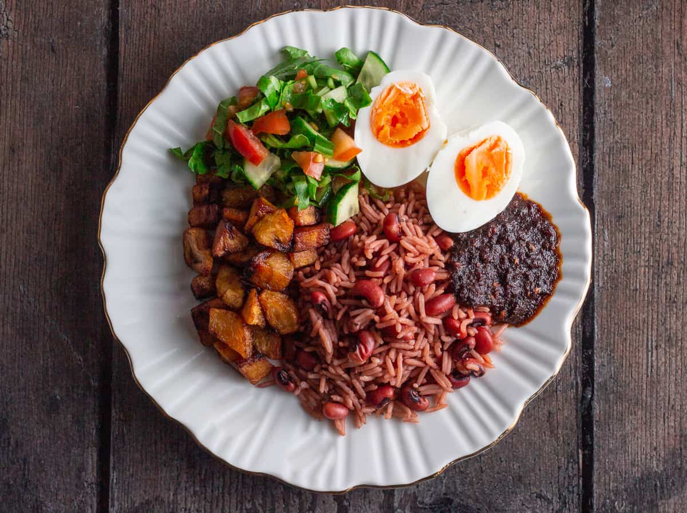

Waakye

Country: Ghana
Cooking Time: 90 minutes
Difficulty: Medium
Servings: 4
About the Dish
Waakye is a popular Ghanaian dish made by cooking rice and beans together. It is commonly eaten for breakfast or lunch.
Waakye is often served with stew, boiled eggs, fried plantains, vegetables, and other side dishes.
Ingredients
- 2 cups rice
- 1 cup dried black-eyed peas
- 6 cups water, plus more if needed
- 1 teaspoon salt
- Optional dried sorghum leaves
- Stew for serving
- Boiled eggs for serving
- Fried plantains for serving
Cooking Instructions
Step 1: Prepare the Beans
Rinse the beans and soak them for several hours or overnight to reduce cooking time.
Step 2: Cook the Beans
Place the beans in a pot with water. Add the sorghum leaves if available, and cook until the beans begin to soften.
Step 3: Add the Rice
Rinse the rice and add it to the pot. Remove the sorghum leaves if used. Add salt and enough water for cooking.
Step 4: Finish Cooking
Cover the pot and cook on low heat until the rice and beans are tender.
Step 5: Serve
Serve the Waakye with stew, boiled eggs, fried plantains, or your preferred sides.